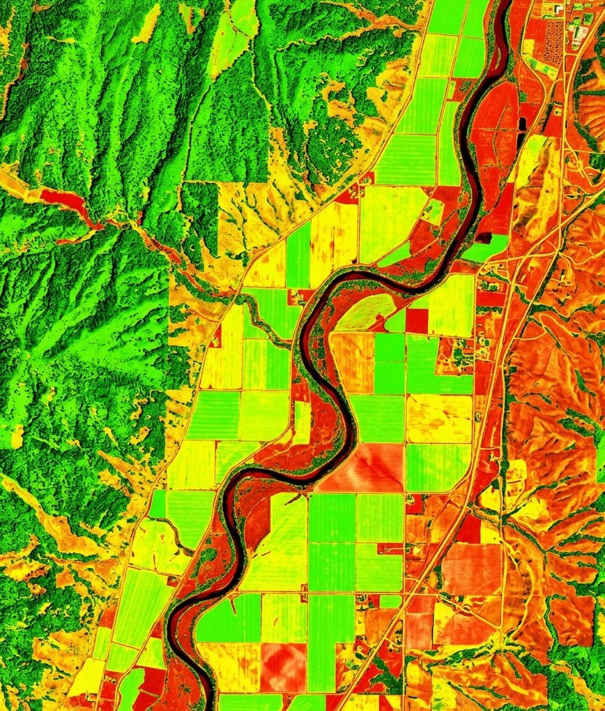
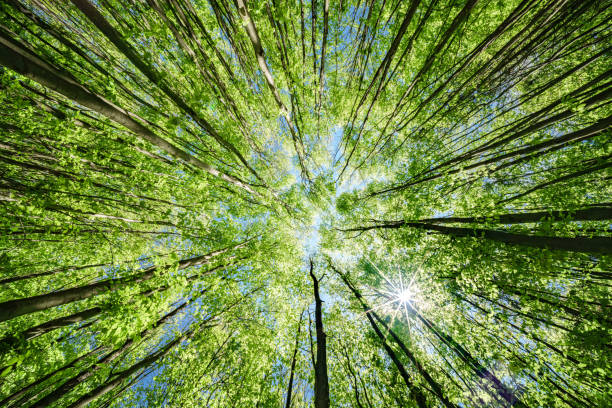
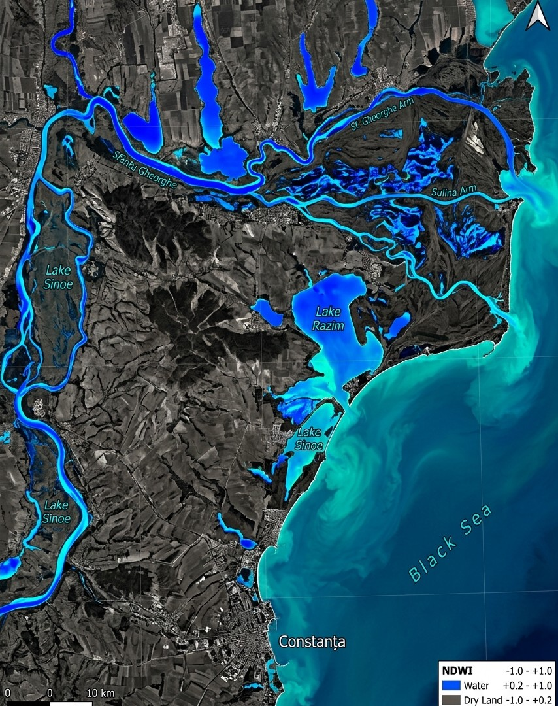
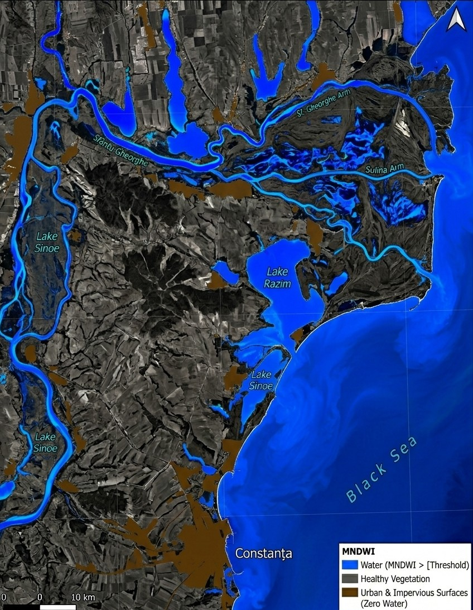
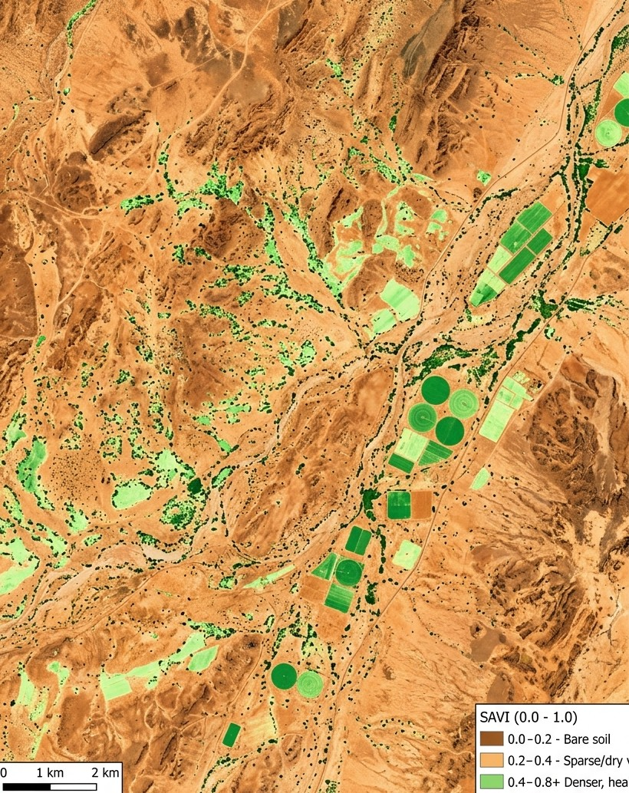
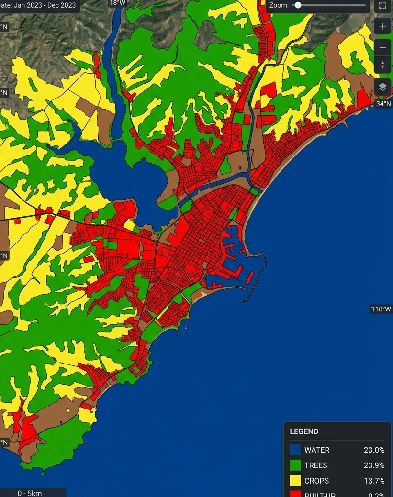
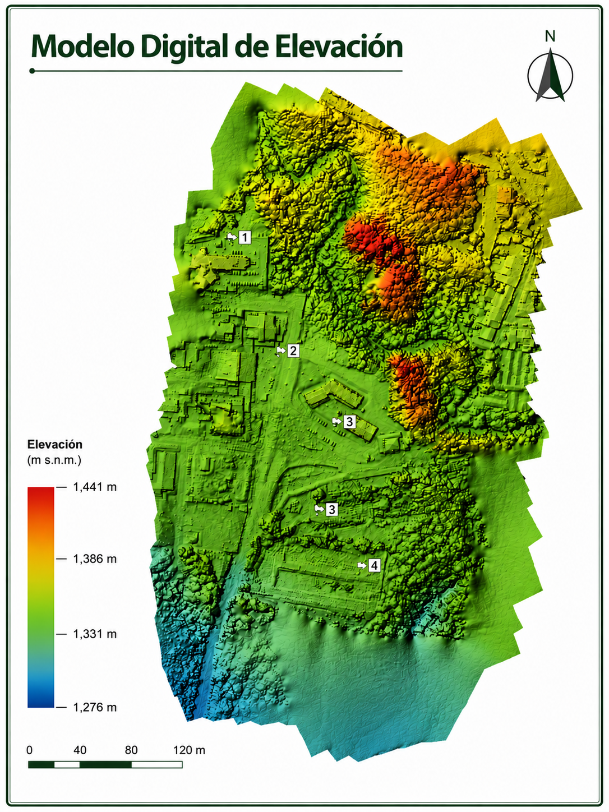
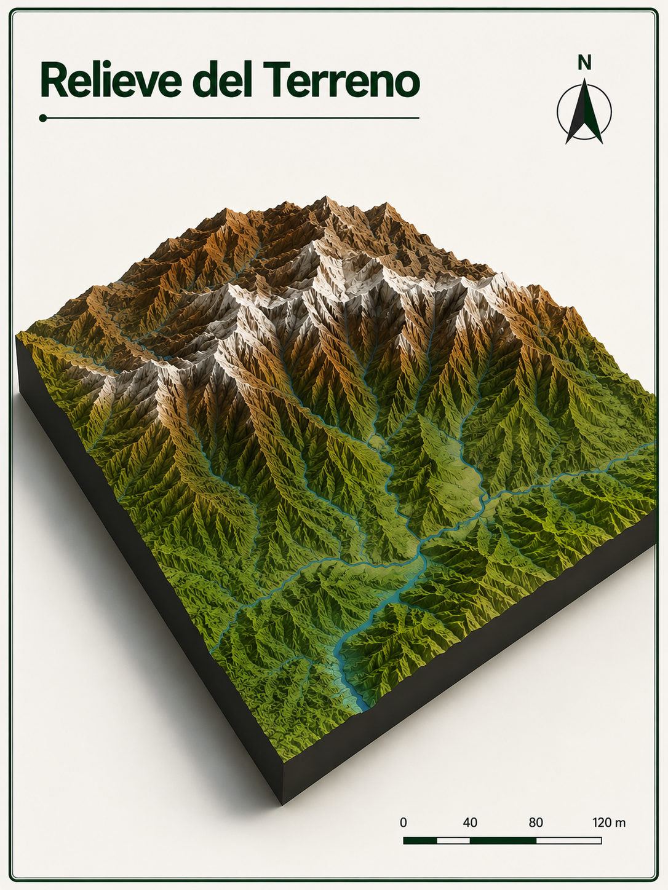

🌱NDVI
Índice de Vegetación de Diferencia Normalizada. Contrasta el infrarrojo cercano y el rojo para observar patrones compatibles con vigor y presencia de vegetación.
Útil en cultivos, bosques y análisis multitemporal.PLATAFORMA DE GEOCIENCIA APLICADA VERSIÓN 1.0
Un código listo para ejecutar en Google Earth Engine, explicado para que tomes decisiones con mayor contexto territorial.
01 — EL PROYECTO
GeoTools GEE es una plataforma de herramientas y códigos documentados para facilitar el uso de Google Earth Engine en análisis ambientales, satelitales y topográficos.
GeoTools GEE no ejecuta los análisis directamente. Los códigos se ejecutan en Google Earth Engine.
RUTA DE TRABAJO
02 — ANÁLISIS ÓPTICO
La herramienta utiliza información de sensores satelitales para estudiar variables relacionadas con vegetación, agua y cobertura del suelo.

PRODUCTOS ÓPTICOS
Cada índice responde a una pregunta distinta sobre la superficie terrestre y debe leerse dentro del contexto del área de estudio.

🌱Índice de Vegetación de Diferencia Normalizada. Contrasta el infrarrojo cercano y el rojo para observar patrones compatibles con vigor y presencia de vegetación.
Útil en cultivos, bosques y análisis multitemporal.
💧Índice de Diferencia Normalizada del Agua. Ayuda a resaltar humedad y cuerpos de agua frente a vegetación o superficies más secas.
Interprétalo considerando sombras, suelo y fecha de la imagen.
🌊Índice de Agua Modificado. Emplea la banda verde y el infrarrojo de onda corta para apoyar la diferenciación de agua en paisajes complejos.
Puede ser útil en humedales, riberas y zonas urbanizadas.
🌿Índice de Vegetación Ajustado al Suelo. Reduce la influencia del suelo desnudo cuando la cobertura vegetal es dispersa o está en etapas tempranas.
Orientativo para áreas semiáridas, agrícolas o con suelo expuesto.
🗺️Clasificación de cobertura del suelo con las clases implementadas: agua, bosque, pastos, vegetación inundada, cultivos, matorral, urbano, suelo desnudo y nieve/hielo.
Las clases deben validarse según el objetivo y el área analizada.03 — ANÁLISIS TOPOGRÁFICO
Evalúa las características del terreno mediante modelos digitales de elevación y productos derivados para apoyar análisis territoriales y ambientales.
Modelos disponibles: SRTM y ALOS AW3D30 · resolución utilizada: 30 m.


05 — DOCUMENTACIÓN
La primera herramienta publicada en GeoTools GEE.
Permite elegir entre análisis óptico y topográfico. Para el análisis óptico trabaja con Sentinel-2 o Landsat 8/9, incluye RGB, NDVI, NDWI, MNDWI, SAVI y cobertura Dynamic World. Para topografía utiliza SRTM o ALOS AW3D30.
Debes disponer de una cuenta de Google con acceso a Google Earth Engine y tener un proyecto creado o seleccionado en Earth Engine para poder ejecutar el código.
Variable de geometría:tableDibuja o importa tu área de estudio en Google Earth Engine y asegúrate de que la variable/geometry esté disponible con el nombre table antes de ejecutar el código.
CÓDIGO ORIGINAL · JAVASCRIPT
Cargando código…Copia el código, abre Google Earth Engine Code Editor y pégalo allí.
Abrir Google Earth Engine ↗06 — GUÍA COMPLETA
Sigue este orden sugerido. Cada paso corresponde a una acción esencial del flujo de trabajo en Google Earth Engine.
table.07 — CÓMO INTERPRETAR RESULTADOS
Cada índice usa la misma paleta que verás en la leyenda dinámica del panel dentro de Earth Engine.
Valores cercanos a 1 indican vegetación densa y sana; cercanos a 0, suelo o construcciones; negativos, agua o nieve.
Valores altos y azules resaltan cuerpos de agua superficial; valores bajos indican vegetación o suelo seco.
Útil para agua superficial y para reducir confusión con zonas urbanas, útil para deltas, humedales y cuerpos de agua.
Corrige el efecto del suelo desnudo, ideal en zonas con cobertura vegetal dispersa o cultivos tempranos.
Clasificación por píxel entre nueve categorías. El área total de cada clase se imprime en la consola y se exporta como CSV.
Elevación: altura sobre el nivel del mar. Pendiente: inclinación en grados. Orientación: dirección de la ladera en grados. Hillshade: sombreado que simula la iluminación solar para apreciar el relieve.
08 — SOBRE EL PROYECTO
GeoTools GEE busca facilitar el acceso a herramientas de análisis geoespacial mediante códigos ejecutables y documentados en Google Earth Engine.